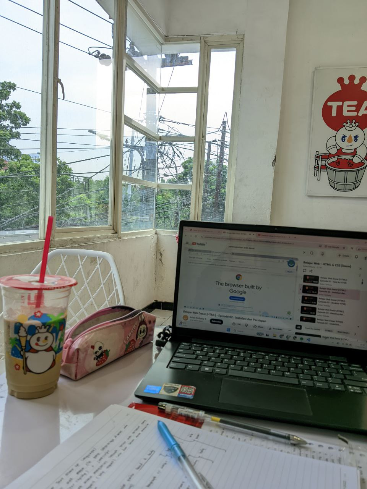
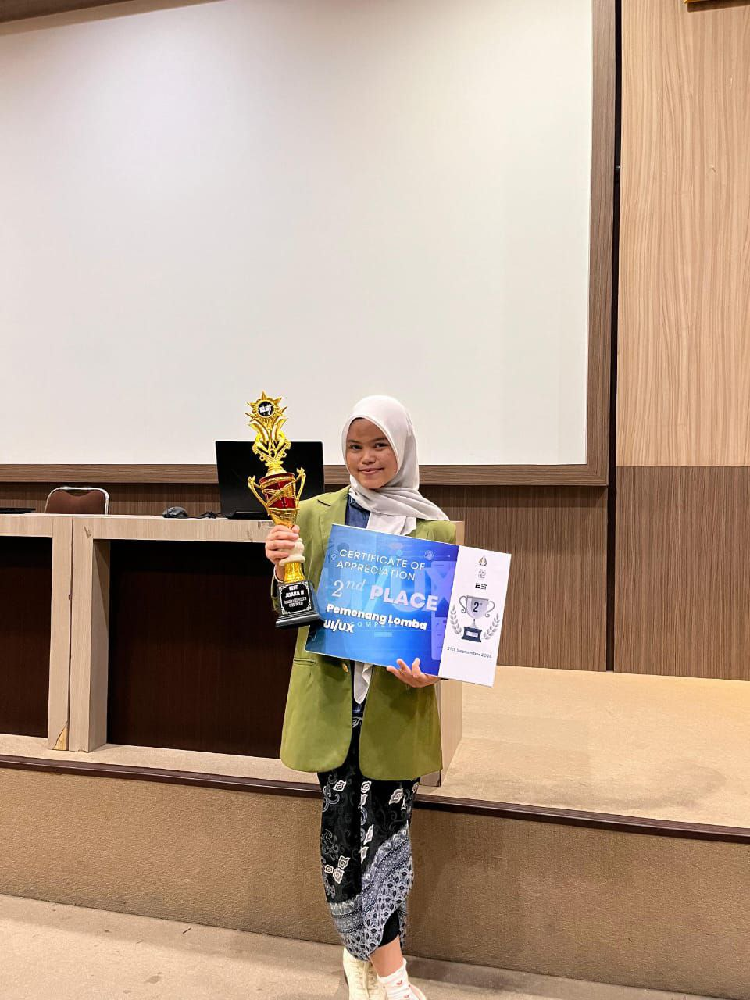
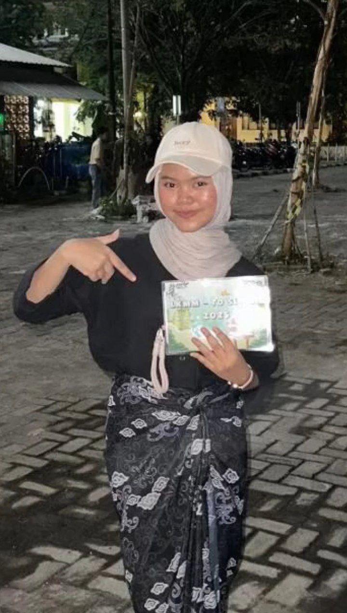

I am a highly dedicated and passionate individual in my field. I continuously explore and learn various aspects of technology, especially in web development and UI/UX design. I believe that growth comes from curiosity and consistency.
I am always open to collaboration, sharing ideas, and working together with others to create meaningful digital experiences.

I am also an achiever in my field, particularly in UI/UX design. I have won a UI/UX competition, which strengthened my confidence and sharpened my design thinking skills.
I truly enjoy collaborating with others in the UI/UX field and I am always excited to work on creative and innovative projects.

Beyond academics, I actively participate in non-academic activities such as organizational committees. I have served as a division member, division secretary, and even division head.
I also continuously develop my soft skills, especially public speaking, by becoming a Master of Ceremony in training events. These experiences help me grow both professionally and personally.
